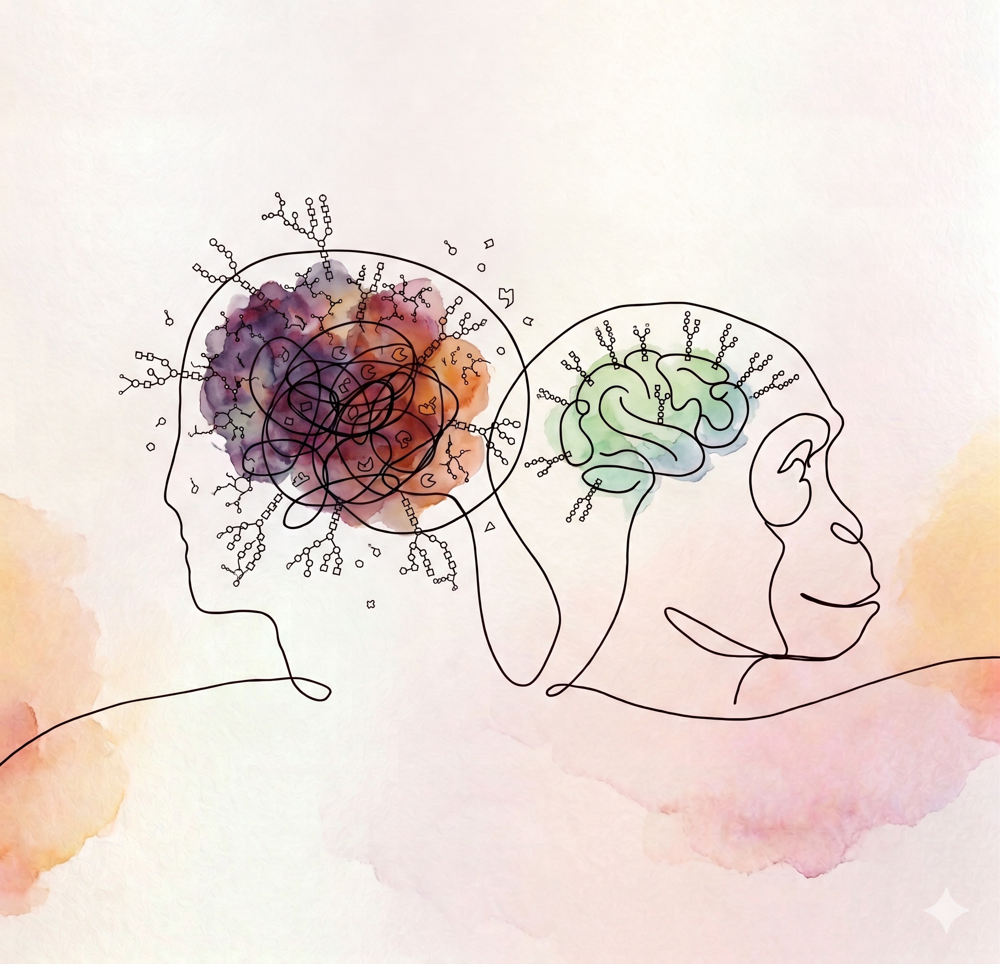

iPSC-Derived Brain Organoids
We develop highly reproducible human brain organoid models to study physiological cortical development and model neurodevelopmental pathologies in real-time.

At the Pravata Lab, we view human brain development through the lens of post-translational logic. While genetics provide the basic blueprint of the brain, we investigate how protein modifications actually dictate its final architecture. Our group uses advanced iPSC-derived brain organoids to map the neural glycoproteome as it develops in real-time. By combining quantitative mass spectrometry with precision CRISPR Prime Editing, we are decoding how the "glyco-code" wires the developing human cortex, creating new paradigms for understanding complex neurobiology.
We develop highly reproducible human brain organoid models to study physiological cortical development and model neurodevelopmental pathologies in real-time.
We investigate how post-translational modifications, specifically O-GlcNAc transferase (OGT) variants, govern stem cell self-renewal and dictate neuronal lineage decisions.
Using quantitative mass spectrometry proteomics and precision CRISPR genome editing, we decipher the chemical codes that instruct cortical architectures and synapse formation.
We foster intellectual independence, scientific integrity, and curiosity-driven exploration. As a group leader, I prioritize your personal and professional growth above all else.
You can expect structured mentorship, regular 1-on-1 guidance, transparency, and active support in securing fellowships, publishing high-impact work, and navigating your career path.
You will develop deep technical expertise in iPSC-derived brain organoid models, quantitative mass spectrometry, and precision genome editing, while building critical thinking and leadership skills.
We believe that groundbreaking science thrives on diverse perspectives. Our lab is committed to providing a safe, inclusive, and equitable environment where every scientist belongs.
Principal Investigator & Assistant Professor
Dr. Pravata leads the Pravata Lab. Her research explores how post-translational modifications, particularly O-GlcNAcylation and glycosylation, act as molecular instruction codes in human brain development. Combining human iPSC-derived brain organoids, quantitative mass spectrometry, and CRISPR technologies, she investigates the mechanisms underlying intellectual disabilities and cortical wiring.
Postdoctoral Researcher
Ph.D. Student
Ph.D. Student
M.S. Student
Our collaborative study on how species-specific cortical features are driven by developmental gene expression patterns is now published in Nature. Read the paper here.
Our preprint on developing a reproducible human brain tissue model to study physiological and disease-associated microglia phenotypes is online on bioRxiv. Read it here.
Our paper describing Zscan4 as a candidate conveyor of early developmental defects in OGT intellectual disability has been published in Molecular & Cellular Proteomics. Read the paper here.
The Pravata Lab is officially open! We are excited to begin our journey to decode the post-translational glyco-code wiring the human cortex. We are actively looking for talented students and postdocs to join our team.
We are always looking for motivated Ph.D. students and postdocs. If you are passionate about neurodevelopment, post-translational modifications, and utilizing brain organoids to decode complex biology, we'd love to hear from you.
Please send an email with your CV and a brief statement of your research interests.
Email: contact@pravatalab.org
Location: Room 404, Developmental Neurobiology Building
University Name, City, State, ZIP
Focusing on mapping the neural glycoproteome as it develops in real-time using high-throughput quantitative mass spectrometry.
Open for ApplicationsInvestigating the molecular mechanisms of OGT intellectual disability syndromes using CRISPR Prime Editing in iPSC-derived brain models.
Open for Applications